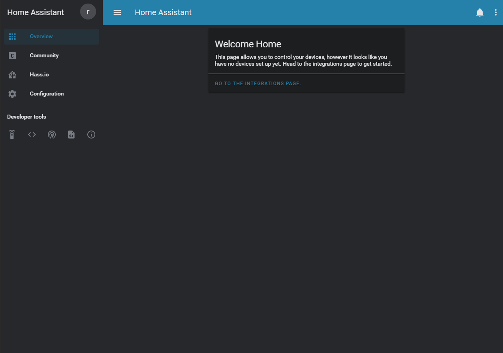

HACS (Home Assistant Community Store)¶

What can HACS do?¶
This is a manager for your custom Home Assistant needs.
It can help you download and update elements.
It can also help you discover new awesome stuff.
What can it track/discover?¶
- Custom integrations (components/platforms/custom_component) for Home Assistant
- Custom plugins (cards/rows/mods) for Lovelace
- AppDaemon apps for AppDaemon
- Themes for the frontend integration in Home Assistant
- "python_scripts" for the
python_scriptsintegration in Home Assistant
Updates¶
Installed elements¶
HACS will check for updates to installed elements:
- At startup.
- Every 30 minutes after HA startup.
Everything else¶
HACS will check for updates to every element:
- At startup
- Every 500 minutes after HA startup.
Manually trigger updates¶
You can also force a check by clicking the "RELOAD DATA" button under the "SETTINGS" tab (This will force a reload of everything.)
Under the "SETTINGS" tab there is also a reload icon to the left of every custom repository you have added, clicking that will reload info for it.
On each RepositoryView (the page with details about the element) there is a reload icon at the top-right corner, clicking that will reload it.
Logs¶
Like any other integration this logs to the home-assistant.log file.
You can also click the "OPEN LOG" from the "SETTINGS" tab to show logs only related to this integration (useful when creating a issue)
To enable debug logging, add this to your configuration.yaml:
logger:
default: info
logs:
custom_components.hacs: debug
Startup¶
During the startup it will scan for know repositories, and there will be a progressbar indicating that it's working.

This is completely normal, and you can still use it while it's working. The same indication will show when a scheduled task is running.
Existing elements¶
This will not scan you local file system for existing elements.
Why?
Trust. If this did not download it, there'd be no way to know which version you have, so for elements you already have you will still need to click the "INSTALL" button for that element.
Local data storage¶
All data it handles are saved to the hacs file that is located under .storage
HACS Sensor¶
During the setup HACS will add a new sensor to your installation (sensor.hacs).
This will have the number of pending updates as the state.

Contribute¶
This integration is massive and there are a lot of areas to contribute to.
Contributions to the docs, will almost be blindly accepted.
Contributions for the documentation should go against the master branch.
For contributions to the integration itself (backend/frontend)¶
Contributions for the integration should go against the next branch.
If the contribution is minor, make the change and open a PR (Pull Request).
For new features, changes to existing features, or other big changes, please open an RFC (Request for comment) issue before you start the work.
Last notes from the initial developer¶
First startup after installation will take some time, but it's worth it.
This was developed under the influence of üç∫, a lot of üç∫, if you want to support my work feel free to buy me a ‚òïÔ∏è (most likely üç∫)
How it works and what it does are added based on a single persons mindset, you may not agree with what I have done, if you have a suggestion please open an RFC.
Bugs / issues / suggestions¶
If you find bugs/issues or have any suggestions please open an issue in the HACS Repository